注意：以下的内容均为个人观点。
如果你看完后有不同的观点也没关系！请指出，我很乐意去学尝试积极的东西。
封面：

1. introduction
写这篇的原因是有朋友遇到了一个问题，这里大致描述背景：
一个 RTOS 的系统，原本运行稳定。
近期引入了一个第三方协议库，编译通过后，首次烧录启动正常。
执行
reboot，系统再次拉起时，在解压某个image的时候，解压的结果覆盖了某一块分区的内容，导致分区数据错误，而这一块分区是被别的资源数据所依赖的（异常发生点）。
这里他们已经解决了（Claude Code 协助），但这里人肉恢复一下解 bug 的过程呗，因为之前也遇到了类似的问题，只是不是解压，但也一样在启动/解压这种早期阶段的，也是这么查出来的。
这种 bug 其实还相对好解，因为能复现，只是肯定是有你不知道的内容在的。
2. 分析
2.1 正常流程
看到这个问题的第一想法，脑子里还是有个正常的启动-解压过程是怎么走的：
-
系统于某个地址开始执行（
bare-metal程序），从bootROM或者固定启动代码加载loader，跳转到loader的执行。 -
loader开始解压下一级的image到一个具体的地址image_addr，其中image_addr ~ image_addr + image_size都是在提前规划好的分区中的，大小提前规划好了，比如说：0x80000000 ~ 0x81000000。（当然，这个loader或者后续的程序也会解压更多的数据/程序，可能有多级的loader）一般
bootloader会用到LZ4压缩算法[1]：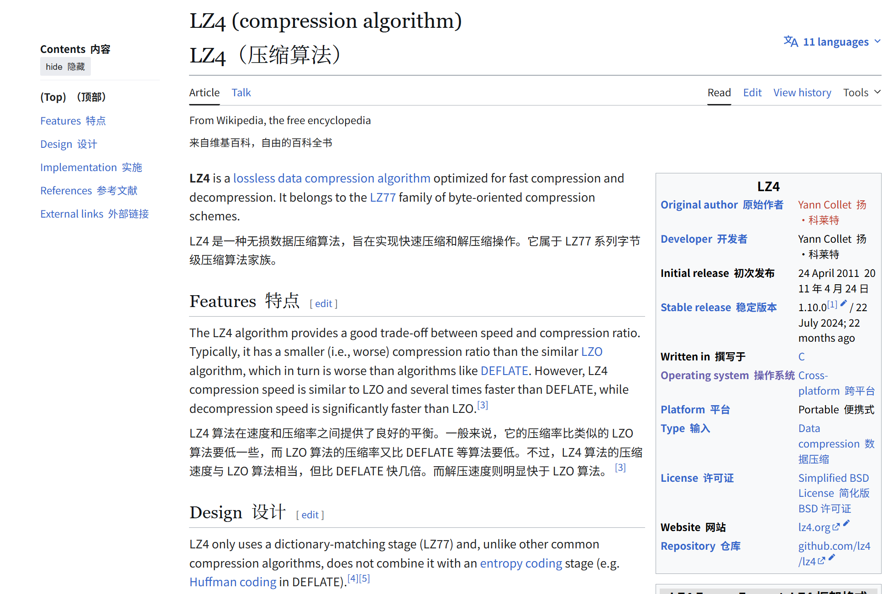
-
跳转到
image执行。
2.2 异常解压
既然问题/异常出现在解压 image 过程中，之后去排查的点自然就比较通畅了，就是看解压动作到底哪里超出了预期。
一般来说，loader 解压覆盖了相邻物理内存区，无非就两种可能：
- 目标地址漂移了：解压的起始地址错了，整体往后移，冲进了别人的地盘。
- 解压体积暴涨了：起始地址没错，但吐出来的数据量实在太大，超出了原本规划的
image_size，直接溢出到了后方区域。
可以直接排除第一点，loader 里的硬编码目标地址并没有任何改动。那么问题只能出在体积上。
再结合当前正在做的工作：引入某个第三方协议库。
那自然也能猜测是引入三方库带来的固件体积大小的变化。此时直接去看构建产物的大小（size、ls -lhu 等命令）：
- 压缩后体积（LZ4 payload）：几乎没变（仅增加几十 KB）。
- 解压后体积（Decompressed payload）：增加了25MB左右
但之后要去看什么呢？ELF。
2.3 ELF & VMA & LMA
2.3.1 ELF
在这一篇：[SCR-01] 未初始化的全局变量占不占固件空间？中我提到过：
“目前现代 OS 和大多数嵌入式高级工具链中，最终得到的编译产物通常是 ELF (Executable and Linkable Format)。”
这里我们遇到的问题也是一样的，固件就是一个 ELF 或者 bin 文件，首先看 ELF 文件，在 [2] 中我也提到，ELF 的基本结构如下[3]：

不管是链接视角还是执行视角，ELF 的文件都是结构化的，有组织的。
所以我们可以把 ELF 理解为：”元数据+实际的section“，也就是通过各种头信息（program header table、section header table）告诉系统对于这个可执行文件，这一 section 放在哪里 ，那一 section 放在哪里。
所以在看到体积大小相关的问题，可以直接去看各个 section 在链接脚本中被放到了哪个地址，各个有体积大小的 section 拼成整一个固件（其实也就毙掉了2.2中的可能一）。
再举个别的项目的例子：
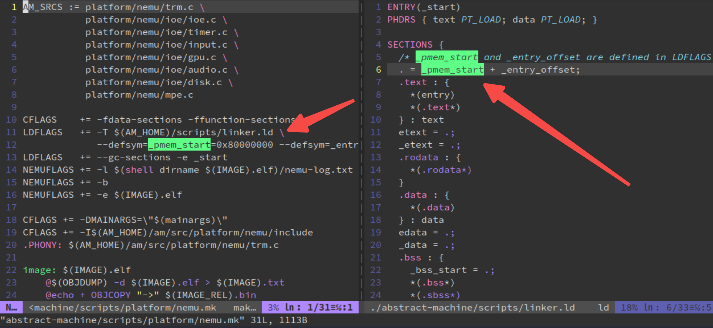
可以看到，在链接脚本中，初始的程序位置在整个地址空间中被分配到了 0x80000000 这个位置，这也就是意味着，之后通过 binutils 工具看到的整个大的程序镜像中的其他 section 的地址位置就是从这里开始了。
但还有个问题，往往大家通过 binutils 工具在看到的 VMA/LMA、VirtAddr/PhysAddr 才更加重要？
其实也没有错，链接脚本可以是说整个系统中的蓝图。链接脚本中的各种赋值操作，就是在告诉链接器，经过编译器计算后的各个 section 的大小（从 0x80000000 开始都放在什么位置），然后链接器也就会把这些值填入到所谓的 VMA/LMA 里去。
再进一步，了解 ELF 文件的各个成员，你就会知道上面的 VMA/LMA 就是 ELF 在装载执行的时候，各个 segment 的中成员之一[3]：
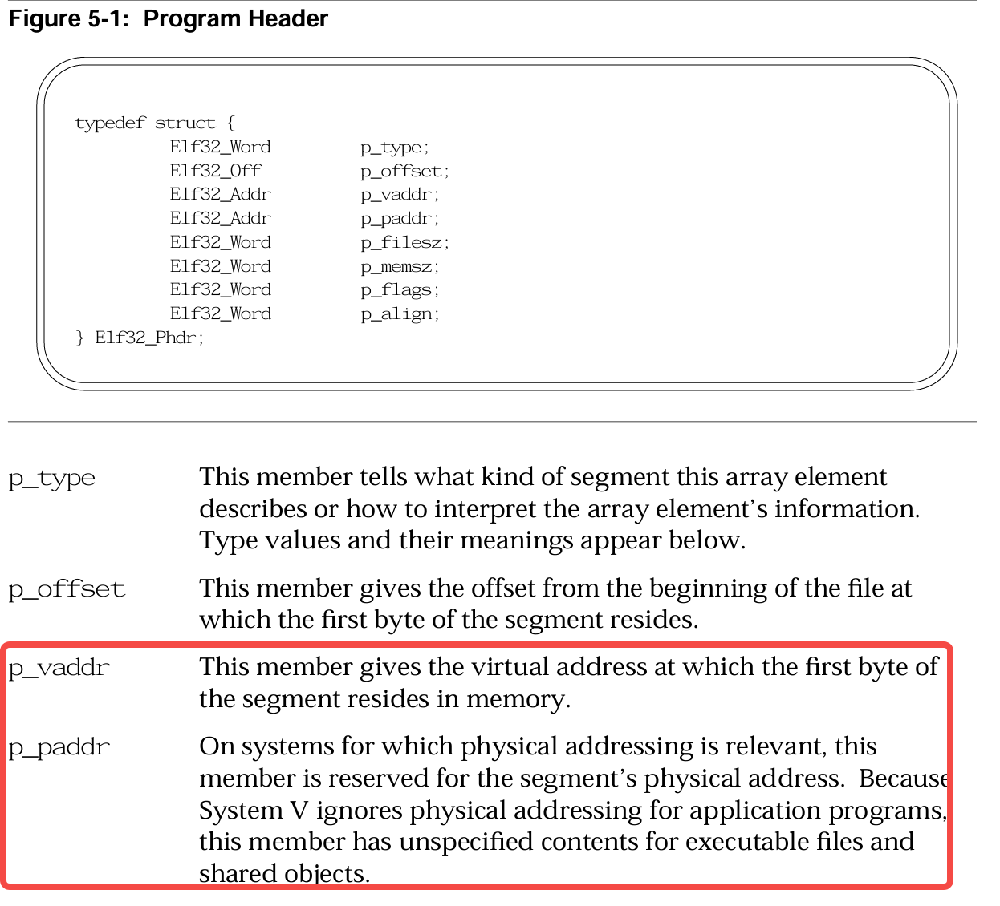
这里直接让 Gemini 分类：
-
现代 OS 上的应用程序（比如说是 Linux 上的一个可执行文件或者动态库）
-
p_vaddr(虚拟地址)：这是真正起作用的字段。当加载器（如ld-linux.so）读取ELF文件时，会把这段数据（p_offset处的内容）加载到进程虚拟内存的p_vaddr位置，并赋予p_flags规定的读写执行权限。程序运行时的指令、全局变量等都是通过这个虚拟地址访问的。 -
p_paddr(物理地址)：这个字段通常被忽略或设置为0。正如上面文档：“System V ignores physical addressing for application programs”。
因为现代操作系统使用虚拟内存管理，应用程序根本不知道自己会被加载到哪块物理内存中（这个映射由内核和MMU管理）。保留这个字段主要是为了兼容某些特定场景。
-
-
嵌入式系统或内核代码（这才是我们的重点）
在没有虚拟内存、直接操作物理地址的环境下（例如
Bootloader、通过链接脚本直接控制整个内存布局、RTOS），p_paddr才有实际意义。这个时候
p_paddr就指向了该segment应该被放置的确切物理内存地址（例如某个外设寄存器地址或特定RAM地址）。当然大多时候
p_addr == p_vaddr的。
所以直接可以给出结论：
p_vaddr→VMA（虚拟内存地址 / 运行地址）p_paddr→LMA（加载内存地址 / 物理地址）
2.3.2 链接脚本 & VMA & LMA
虽然上面说 LMA 是指定确切的物理内存位置，但哪怕一般在 bare-metal 的场景，VMA 和 LMA 绝大多数时候相等的，因为一般都是在 RAM 中操作各种内容。
当你说要从 Flash 中拷贝数据到 RAM 中，这个时候，这个数据地址的存放地址（LMA）和程序运行地址（VMA）才会不同。
而规定上面这种用法的，还是回到链接脚本！再来看看 Gemini 是怎么总结链接脚本中是怎么影响 VMA 和 LMA 的，同时结合一个链接脚本的例子：
MEMORY {
FLASH (rx) : ORIGIN = 0x08000000, LENGTH = 1M
RAM (rw) : ORIGIN = 0x20000000, LENGTH = 128K
}
SECTIONS {
.text : { *(.text) } > FLASH
.data : {
*(.data)
} > RAM AT> FLASH /* VMA 在 RAM，LMA 跟在 FLASH 中 .text 之后 */
}
-
VMA（运行地址）：程序执行时，该段期望被放置的内存地址。链接脚本中直接写在节名后面的地址，就是 VMA。例如：
.text : 0x10000 { *(.text) } # 这里的 0x10000 就是 VMA -
LMA（加载地址）：程序被烧录/加载时，该段原始数据在存储介质（如
Flash、文件）中的位置。在bare-metal中，如果数据需要从Flash搬到RAM，就需要分别指定LMA和VMA。# VMA 由 >RAM 决定（假设 RAM 起始 0x20000000），LMA 强制为 0x8000 .data : AT(0x8000) { *(.data) } > RAM # 更常见的写法： .data : { *(.data) } > RAM AT> FLASH -
AT>指令解析AT用于分离LMA和VMA，常见于：- 数据段放在
Flash，但需要在RAM中运行（需启动代码复制）。 - 代码的运行时地址与加载时不同（如位置无关代码的搬运）。
- 数据段放在
- 如果系统直接在物理地址运行（如 bootloader、内核入口），VMA 就是 CPU 要访存的地址，而且程序不会被从别处搬运，那么 LMA 自然等于 VMA，不需要写
AT。
当需要将数据段从 Flash 搬到 RAM 时，这样写（或者使用
AT> FLASH简化）：.data : AT(ADDR(.text) + SIZEOF(.text)) { ... } > RAM这里可能看这个语法比较混乱，简单解释：
-
.data：定义一个名为.data的section，将从各个输入.o文件中收集所有.datasection（或者{ *(.data) }中的规则）合并进来 -
> RAM：指定该section的 VMA（运行地址），这个是我觉得比较容易搞混的。如果你写过一些链接脚本，你就会知道这个
RAM必须是在MEMORY命令中预先定义的内存区域，比如说：MEMORY { RAM (rw) : ORIGIN = 0x20000000, LENGTH = 64K } -
AT(ADDR(.text) + SIZEOF(.text))指定该
section的 LMA 加载地址
这里可能稍微写 ELF 的部分有点多了，但是知道 VMA/LMA 这些概念还是很重要的。回到主题。
知道要看固件体积，那就是要看 ELF 的体积了，而 ELF 基本又是靠 section 组成的，所以最终结论：
ELF 文件的体积 ≈ 各个 section 的体积之和。
所以也可以变相地说明，既然固件体积异常，可以说某一个 section 的体积/位置不太对。
此时我们再用合适的工具（.map、objdump/readelf/nm/...）去看 ELF，发现（不方便展示内部数据）：
.text 和 .data 加起来只增加了区区不到 1MB。
所以可以说是 bin 出了问题了？因为一步步排下来：
*.c/*.S → *.o/*.so → *.elf → *.bin → compressed.bin .
前面三阶段都按照我们的思路走了，那就是最后的 bin 文件了嘛。
而且前面 2.2 展示的固件解压前后体积却差了 20 多MB，基本也能知道解压前没问题，解压后出问题了，而解压算法用了这么久都没问题，那问题只能是被压缩的 bin 上了嘛。
2.4 bin 文件
bin 文件更好理解，就是一个 raw binary，就是一扁平化的，也就是它没有任何头部信息，就是一段纯粹的内存 image。
有点类似图像相关的
raw文件直出，没有什么JPG、PNG、JPEG压缩，但还是有区别。
我们主要是使用的 objcopy 这一工具来把 ELF 文件转换成 bin 文件的。
objcopy主要工作是复制和转换目标文件，就是一个二进制文件格式转换器+“手术刀”
- 格式转换：在不同格式间相互转换，例如 ELF 转 Binary (用于固件烧录)、ELF 转 HEX/S19 等。
- 内容精简：移除调试信息、符号表等运行时不需要的内容，从而显著减小文件体积。
- 内容提取：从目标文件中提取特定的段（Sections）到一个新文件。
- 内容编辑：更高级的用法，包括添加/删除段、修改段地址等。
回到问题背景，他们的项目中用法大致类似如下：
aarch64-linux-gnu-objcopy -O binary --remove-section=.my_resource firmware_bug.elf payload_bug.bin
比较高级，把 firmware_bug.elf 转成 payload_bug.bin 过程中，还把其中的一个 my_resource section 给剔除掉了。
这就有一个问题，因为 objcopy 的默认行为是：
生成Bin 文件的体积 ≈ 最大 LMA（加载地址） - 最小 LMA
objcopy代码见：https://sourceware.org/git/binutils-gdb.git 的binutils/objcopy.c、bfd/binary.c，重点在于copy_object函数（3277行、3297行）。行为：
- 输入解析：读取 ELF 文件，解析出所有
SHF_ALLOC段的加载内存地址(LMA) 及其内容。- 排序：将所有需要拷贝的段，根据其 LMA 从小到大进行排序。
- 计算空隙：计算相邻两个段的地址差值
gap = LMA_Next - (LMA_Current + Size_Current)。这个gap就是要填充的洞的大小。- 填充与写入：
- 从最小 LMA 开始，将所有段的数据依次写入输出文件。
- 在写入每个段的数据后，检查它与下一个段之间的
gap。如果gap > 0，则在输出文件中写入gap字节的填充值（默认为0x00，或由--gap-fill指定）。- 尾部填充：如果使用了
--pad-to参数，且最后一个段的结束地址小于指定地址，则在文件末尾继续填充到指定大小。
那其实很好说了，我们之前看到 size 命令输出的实际数据没变大，说明我们没有引入 20 多 MB 的真实代码，但生成的解压后的 .bin 文件（解压后的 payload）暴涨了 20 多MB。
根据 objcopy 的 代码规则，既然不是真实数据变大了，那一定是地址跨度（最大 LMA - 最小 LMA）被拉长了 20 多MB。
所以，既然地址跨度被拉长了，就一定有一个“不知好歹”的 section，被链接器分配到了遥远的高地址（排在了那 20 多MB 空洞的后面），从而把整个 .bin 文件的边界给撑大了。
3. 问题总结
经过他们内部对比正常和异常两个版本固件（直接 objdump -h 两个版本，再 diff ）：
- Before 版本：最后一个分配了 LMA 的段是
.eh_frame，最大地址截止在0x80C00000。 - After 版本：突然多出一个
.tdata，它的 LMA 赫然写着0x82800000，成为了新的最大地址，而且刚好和原先的末尾（.eh_frame）拉开了 20多MB 的距离（因为那个资源段被打包走了）。
而他们在引入第三方库中发现，这个第三方又用到了 TLS(Thread Local Stoage)，而这个 TLS 又用到了 tdata section，恰恰好这个 section 没有被链接脚本所管理，那自然就出现问题了。画一个图看就明白了：
【正常版本：安全的边界】
0x80000000 0x80C00000 0x81000000 0x82800000
[ .text | .data | .bss ] (空洞) [ .resource (不打包进 OS) ]
↑最小LMA ↑最大LMA
Raw binary 体积 = 0x80C00000 - 0x80000000，完美。
【问题版本：被拉扯的边界】
0x80000000 0x80C00000 0x81000000 0x82800000 0x82B00010
[ .text | .data | .bss ] (强制填零) [ 强制填 0x00 (20多MB) ] [.tdata 16B]
↑最小LMA ↑新的最大LMA
Raw binary 体积被强制撑大 27MB！
这里展示一个自己复现的 elf ：
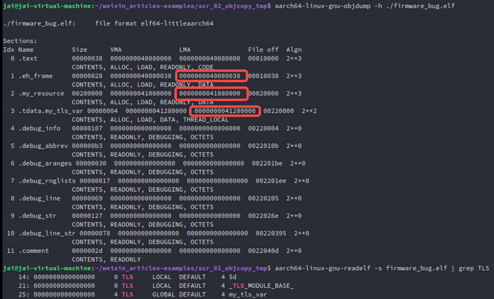
0x41280000 - 0x40080038 = 17MB
很合理。之后的他们的改进措施，就是显示地收容这个 tdata section 了。
这里也有一个名字：没有显示被链接脚本收容的 section 就会成为一个 orphan section。
4. 实践
完整代码见：https://github.com/JAILuo/wechat-demos#
4.1 不解压，直接验证
这里直接构建两个版本固件：链接脚本是否管理 tdata section
/* bug.ld - 不处理 .tdata，使其成为孤儿section */
OUTPUT_FORMAT("elf64-littleaarch64")
ENTRY(_start)
SECTIONS
{
/* 代码段放在 0x40000000 */
. = 0x40080000;
.text : {
*(.text.boot)
*(.text*)
}
.rodata : { *(.rodata*) }
.data : { *(.data*) }
.bss : { *(.bss*) }
/* 资源段放在 0x41080000，地址洞 */
. = 0x41080000;
.my_resource : { *(.my_resource) }
/* 这里故意不写 .tdata / .tbss，它们会成为孤儿section，
被 ld 自动放到所有已知段之后（即 .my_resource 之后） */
}
/* fix.ld - 显式收容 .tdata / .tbss 并放在资源段之前 */
OUTPUT_FORMAT("elf64-littleaarch64")
ENTRY(_start)
SECTIONS
{
. = 0x40080000;
.text : {
*(.text.boot)
*(.text*)
}
.rodata : { *(.rodata*) }
.data : { *(.data*) }
.bss : { *(.bss*) }
/* 显式放置 TLS 段，在资源段之前 */
. = ALIGN(32);
.tdata : { *(.tdata .tdata.*) }
.tbss (NOLOAD) : { *(.tbss .tbss.*) }
/* 资源段仍放在 0x41000000，但 raw binary 最大 LMA 已经是 .tdata 末尾，
所以地址洞不会被包含 */
. = 0x41000000;
.my_resource : { *(.my_resource) }
}
测试 main.c：
#include <stdint.h>
// 制造 orphan section 的元凶
__thread int my_tls_var = 0xDEADBEEF;
// 模拟资源段
#define RESOURCE_SIZE (2 * 1024 * 1024)
const uint32_t resource_data[RESOURCE_SIZE / 4] __attribute__((section(".my_resource"))) = {
[0] = 0xAABBCCDD,
[1] = 0xEEFF1122,
[2] = 0x33445566,
[3] = 0x778899AA,
};
void main_c(void) {
// 案发现场：我们直接在 GDB 里看这个地址
volatile uint32_t *magic = (uint32_t *)0x41080000;
// 把值读进寄存器/局部变量，方便 GDB 观察
volatile uint32_t current_val = *magic;
// 死循环，让 GDB 有时间介入
while (1) __asm__ volatile ("wfi");
}
// ...
可以直接看 ./build.sh 的结果：
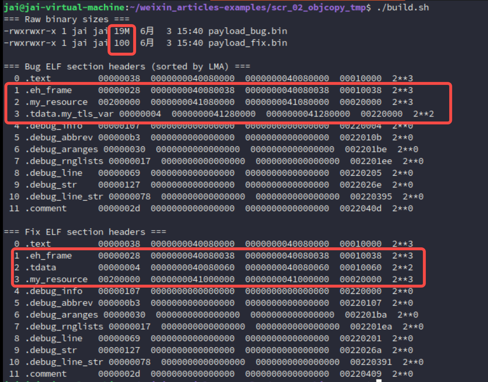
0x41280000 - 0x40080038 = 17MB 出现空洞。
此时直接运行：
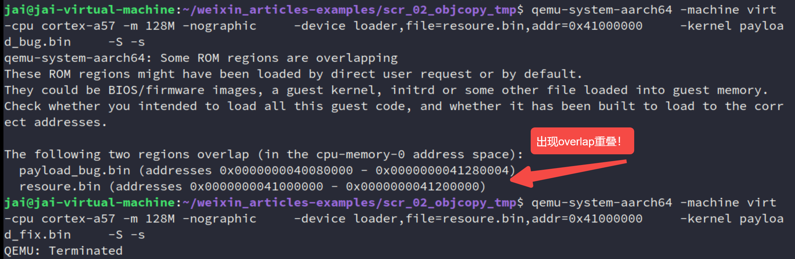
你会发现 qemu 直接都不让那个有 orphan section 的运行！
因为上面这个模拟复现场景并没有做对 image 做压缩，所以 payload_fix.bin 镜像就是实际项目中被解压过后的，很大的那个，在这里直接都被拦截下来了。
所以这为你图本质上就是一个 load-time error，只是说，压缩与解压缩过后，把他变成了 runtime crash！
其实我猜应该一些带 OTA 升级、压缩镜像的
bootloader，都或多或少遇到这个问题！
那这个时候再看看那个修复过后的现象，就是 0x41000000 这个 resource 的区域是否被覆写！启动 gdb：
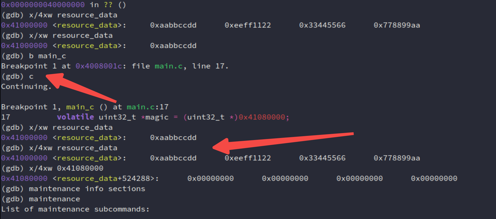
完全没毛病！
4.2 加入解压功能再验证
既然上面的问题不太贴合实际项目的开发，那这里直接借助 AI 的力量 vibe coding 快速复现！
直接用几十行 Python 和 C 代码手搓一个“Z-RLE (Zero-Run-Length-Encoding)”微型压缩引擎（有点像 jyy 老师上课的想法，学到一个新玩意，借助AI快速实践）（实话说，这就花了1min...）。
具体展示代码：
-
首先新建一个文件夹
ota_bug_demo，我们在里面创建所有文件。首先是我们的“上位机打包工具”，它将模拟
lz4命令行工具，把巨大的带有地址空洞的bin文件压缩成极其迷你的格式。新建
compress.py：#!/usr/bin/env python3 # compress.py - 模拟 LZ4 对全零数据极高压缩率的微型算法 import sys def compress(in_file, out_file): data = open(in_file, "rb").read() out = bytearray() i = 0 while i < len(data): if data[i] == 0: # 遇到 0，统计连续 0 的个数 (最多 255) count = 0 while i < len(data) and data[i] == 0 and count < 255: count += 1 i += 1 out.extend([0x00, count]) # 0x00 表示后面是零的个数 else: # 遇到非 0，统计连续非 0 个数 (最多 255) count = 0 start = i while i < len(data) and data[i] != 0 and count < 255: count += 1 i += 1 out.extend([count]) # 非 0 数字表示后面跟着几个有效字节 out.extend(data[start:i]) open(out_file, "wb").write(out) print(f"[Host] Compressed {len(data)} bytes to {len(out)} bytes!") if __name__ == "__main__": compress(sys.argv[1], sys.argv[2]) -
编写 Stage 2 (业务代码：带着孤儿段的元凶)
这是我们要解压运行的实际固件。我们将它的链接基址设在
0x40800000（给 Stage 1 Bootloader 留出空间）。新建
stage2.c：#include <stdint.h> // 万恶之源：孤儿段 __thread int my_tls_var = 0xDEADBEEF; // 模拟资源段（编译后会被 objcopy 抽离，由 QEMU 单独加载） const uint32_t resource_data[4] __attribute__((section(".my_resource"))) = { 0xAABBCCDD, 0xEEFF1122, 0x33445566, 0x778899AA }; void stage2_main(void) { // 案发现场：资源段被映射在这个地址 volatile uint32_t *magic = (uint32_t *)0x41000000; volatile uint32_t current_val = *magic; while (1) __asm__ volatile ("wfi"); }新建
stage2.ld：OUTPUT_FORMAT("elf64-littleaarch64") ENTRY(stage2_main) SECTIONS { /* Stage 2 解压后的运行地址 */ . = 0x40800000; .text : { *(.text*) } .data : { *(.data*) } .bss : { *(.bss*) } /* 地址空洞跨越到 0x41000000 */ . = 0x41000000; .my_resource : { *(.my_resource) } /* 故意不写 .tdata，它会成为孤儿段被排在 .my_resource 之后 (大概 0x4100xxxx 的高位) */ } -
编写 Stage 1 (Bootloader：套娃与解压)
这是 QEMU 最先启动的代码。它包含了微型解压引擎，并且会将压缩后的 Stage 2 固件“内嵌”到自己的只读数据段中。
新建
boot.S(Bootloader 入口及汇编套娃)：.section .text.boot .global _start _start: // 设置 Bootloader 栈顶在 0x40070000 (安全区) ldr x0, =0x40070000 mov sp, x0 b boot_main // 【核心科技】：像俄罗斯套娃一样把压缩包塞进代码里 .section .rodata.payload .global payload_comp_start .global payload_comp_end payload_comp_start: .incbin "stage2_compressed.bin" // 汇编级内嵌！ payload_comp_end:新建
bootloader.c(微型 OTA 解压引擎)：#include <stdint.h> extern uint8_t payload_comp_start[]; extern uint8_t payload_comp_end[]; void boot_main(void) { uint8_t *src = payload_comp_start; // Stage 2 约定的运行基址 uint8_t *dst = (uint8_t *)0x40800000; // 微型解压引擎 (等效模拟 LZ4) while (src < payload_comp_end) { uint8_t ctrl = *src++; if (ctrl == 0x00) { // 收到指令：填零。这正是覆盖内存的“推土机”！ uint8_t count = *src++; for (int i = 0; i < count; i++) { *dst++ = 0x00; } } else { // 收到指令：拷贝有效数据 for (int i = 0; i < ctrl; i++) { *dst++ = *src++; } } } // 解压完成，跳转到 Stage 2 执行！ void (*jump_to_stage2)(void) = (void *)0x40800000; jump_to_stage2(); }新建
boot.ld：OUTPUT_FORMAT("elf64-littleaarch64") ENTRY(_start) SECTIONS { /* QEMU 启动 Bootloader 的地址 */ . = 0x40080000; .text : { *(.text.boot) *(.text*) } .rodata : { *(.rodata*) *(.rodata.payload) /* 内嵌的压缩包在这里 */ } .data : { *(.data*) } .bss : { *(.bss*) } } -
一键构建脚本 (见证奇迹的时刻)
把上述所有逻辑串联起来，完成编译、抽离资源、制造地址洞、压缩、套娃编译全流程。
新建
build.sh并赋予执行权限 (chmod +x build.sh)：#!/bin/bash set -e echo ">>> 1. 编译 Stage 2 (业务代码) ..." aarch64-linux-gnu-gcc -c -g -nostdlib -mcpu=cortex-a57 stage2.c -o stage2.o aarch64-linux-gnu-ld -T stage2.ld stage2.o -o stage2.elf echo ">>> 2. 抽离 Resource 给 QEMU 用，并生成带有幽灵空洞的 Bin ..." aarch64-linux-gnu-objcopy -O binary --only-section=.my_resource stage2.elf resource.bin aarch64-linux-gnu-objcopy -O binary --remove-section=.my_resource stage2.elf stage2.bin ls -lh stage2.bin # 你会在这里看到一个 8MB+ 的巨型文件！ echo ">>> 3. 压缩 Stage 2 (模拟 LZ4 极限压缩 0x00) ..." python3 compress.py stage2.bin stage2_compressed.bin ls -lh stage2_compressed.bin # 奇迹出现：8MB 变成了几百个字节！ echo ">>> 4. 编译 Stage 1 (Bootloader，内嵌压缩包) ..." aarch64-linux-gnu-gcc -c -g -nostdlib -mcpu=cortex-a57 boot.S -o boot.o aarch64-linux-gnu-gcc -c -g -nostdlib -mcpu=cortex-a57 bootloader.c -o bootloader.o aarch64-linux-gnu-ld -T boot.ld boot.o bootloader.o -o bootloader.elf echo ">>> 构建完成！准备启动 QEMU..."
有了基础准备后，看结果！
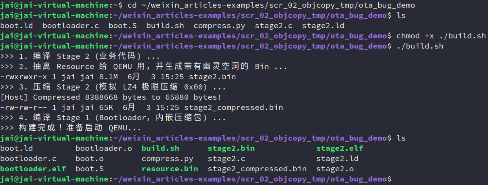
确实从 8MB 压缩到了这么多！
然后调试！
qemu-system-aarch64 -machine virt -cpu cortex-a57 -m 128M -nographic \
-device loader,file=resource.bin,addr=0x41000000 \
-kernel bootloader.elf \
-S -s
注意了，现在就不会报 overlap 了！因为 kernel 现在是微小的 bootloader.elf，它乖乖地待在 0x40080000，绝对不会和 0x41000000 冲突加载期一片岁月静好。)
开启 gdb：
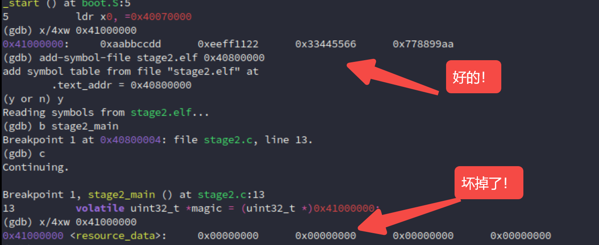
完美！
画个图看看：
-
qemu加载器（解压前）物理内存地址 (LMA) 内存内容 (What's in RAM?) +------------------+ <--- 0x41200000 (安全区) | | | [ QEMU 加载 ] | ---> 0x41000000 : 0xAABBCCDD... (Resource Data，完好无损) | resoure.bin | +------------------+ <--- 0x41000000 | | | | | | ---> 绝对的安全空地 (这里本来是给解压留的空间) | | | | +------------------+ <--- 0x40800000 (Stage 2 预定解压目标地址) | | | | | [ QEMU 加载 ] | ---> bootloader.c & boot.S | bootloader.elf | ---> 内嵌的 stage2_compressed.bin (仅 65KB!) +------------------+ <--- 0x40080000 | Boot 栈空间 | ---> 0x40070000 (sp) +------------------+ -
解压运行期
物理内存地址 (LMA) 内存内容 (What's in RAM?) +------------------+ <--- 0x41200xxx (实际解压终点 = .tdata 孤儿段所在处) | 孤儿段 .tdata | ---> 解压出来的 0xDEADBEEF (在这里！) +------------------+ | 💀 灾难发生区 💀 | ---> 0x41000000 : 0x00000000... (被零淹没，Resource 阵亡) | | | ^^^^^^^^^^^^^^^^ | ---> 解压推土机一路向高地址推进 | |||||||||||||||| | | (约 8MB 的 0x00) | ---> 这里本该是空地，但 objcopy 把 VMA-LMA 偏移当成了有效数据 | |||||||||||||||| | | | +------------------+ <--- 0x40800000 (Stage 2 的 .text 正常解压) | | | Bootloader (存活)| +------------------+ <--- 0x40080000
OK！
当然，如果还想折腾，用另一种调试，watchpoint 玩玩：
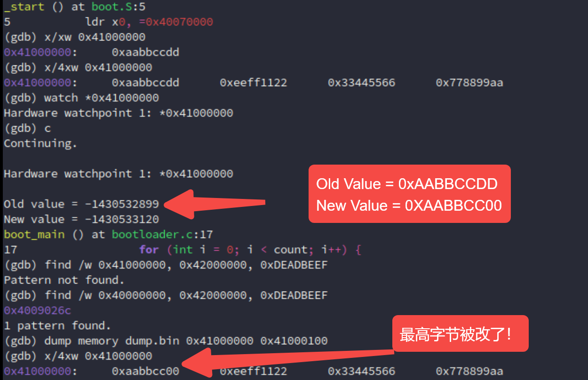
一样！而且更早出现问题，这个地址被改就出现问题！还直接通过 find 命令告诉那个孤儿段的值被解压到了哪里 0x4009026c！
当然，gdb 还能 dump 出来，通过上面的 dump.bin，小端序：高位高地址，就是那个 DD 被改了喔！
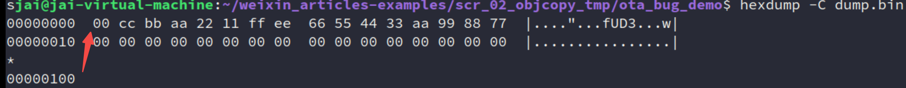
至此，这个问题也算瞎玩了一遍。
其实最后，可以类比到 Linux 那边，这肯定也有遇到类似的问题的！也有解决方案：
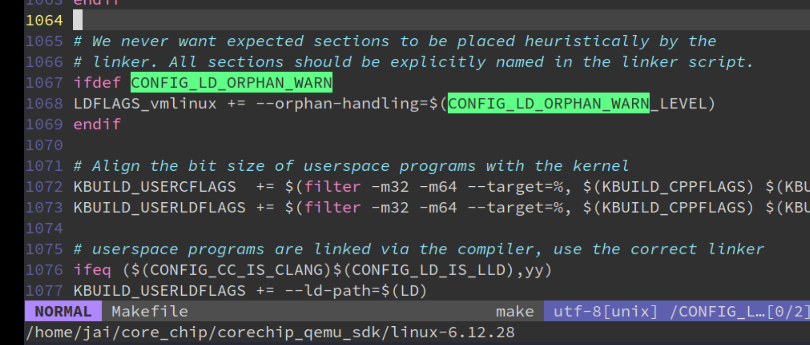
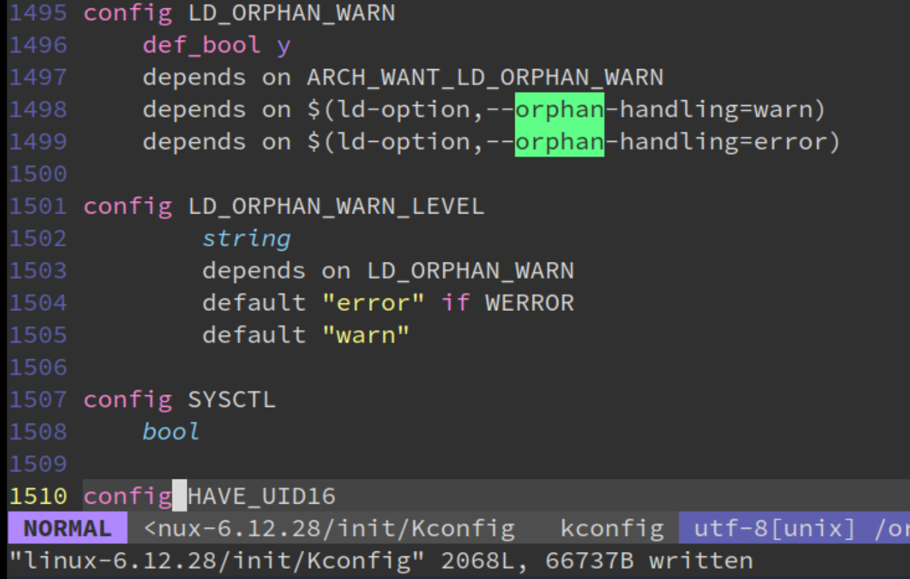
就可以用到本篇的问题，加入了这个后，有孤儿段链接就会报错：
aarch64-linux-gnu-ld -T bug.ld --no-gc-sections --orphan-handling=error main.o -o firmware_bug.elf：
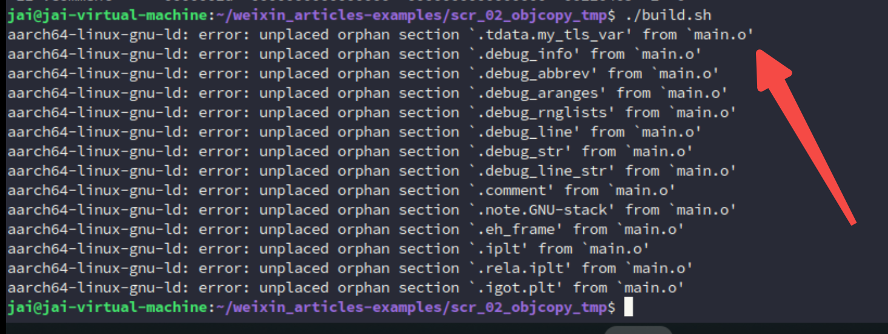
5. 拓展
实际上，上面的复现过程中涉及到的内容都是挺有意思的！
链接器、链接脚本、orphan section、objcopy、QEMU 加载器、GDB 符号表、压缩/解压缩......
推荐去看各种优秀、官方的文档，借助 AI，实践的飞快！
这里我还问了 KIMI，帮我总结各种文档：
Click the link to view conversation with Kimi AI Assistant https://www.kimi.com/share/19e8c94c-bf32-8b55-8000-00007780dd19

真能学到很多东西！比如：
- 嵌入式系统中，
.tdata和.tbss必须按固定顺序放置，通常是.tbss在前（NOLOAD），.tdata在后（有初始值）。 - SEGGER 给出的链接脚本模板和你的修复方案完全一致：显式收容
.tdata和.tbss，放在.data/.bss之后、资源段之前。 - "TLS sections are not adjacent" 是另一个常见错误，说明链接器对 TLS 段的相邻性有要求。
参考资料
[1] LZ4 (compression algorithm) - Wikipedia：https://en.wikipedia.org/wiki/LZ4_(compression_algorithm)
[2] 未初始化的全局变量占不占固件空间：https://mp.weixin.qq.com/s/DAPoV3Zk-xmB1rek8yHbsw
[3] SYSTEM V APPLICATION BINARY INTERFACE：https://refspecs.linuxfoundation.org/elf/gabi41.pdf